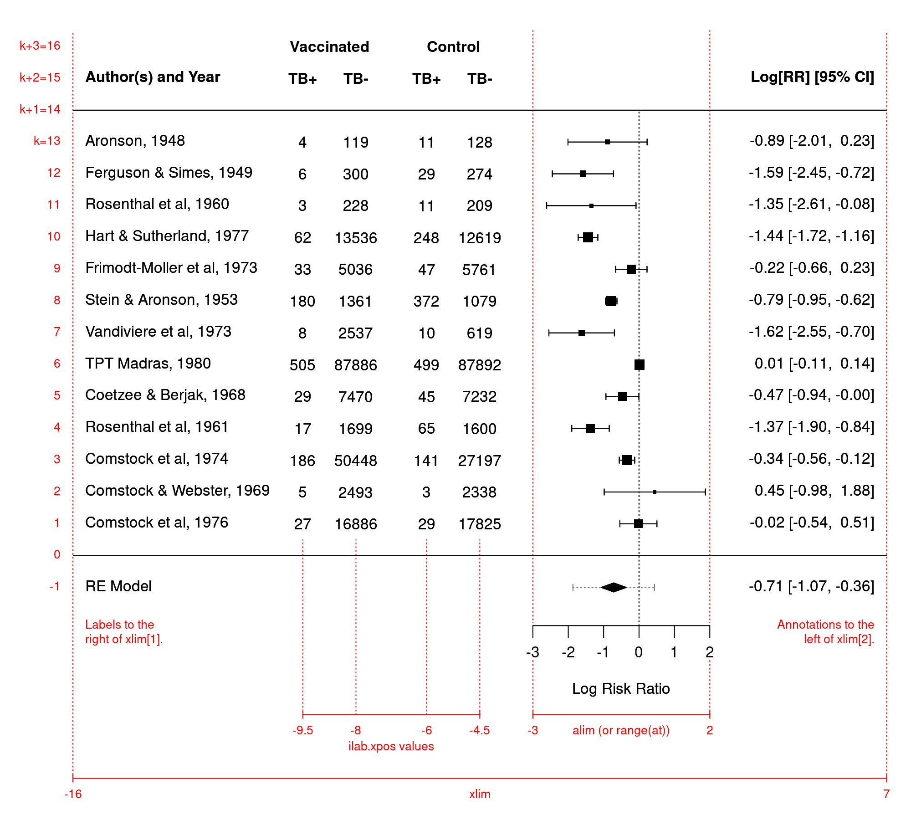

| forest.rma {metafor} | R Documentation |
Function to create forest plots for objects of class "rma".
## S3 method for class 'rma'
forest(x, annotate=TRUE, addfit=TRUE, addpred=FALSE,
showweights=FALSE, header=FALSE,
xlim, alim, olim, ylim, at, steps=5,
level=x$level, refline=0, digits=2L, width,
xlab, slab, mlab, ilab, ilab.xpos, ilab.pos,
order, transf, atransf, targs, rows,
efac=1, pch, psize, plim=c(0.5,1.5), colout,
col, border, lty, fonts, cex, cex.lab, cex.axis, ...)
x |
an object of class |
annotate |
logical to specify whether annotations should be added to the plot (the default is |
addfit |
logical to specify whether the summary estimate (for models without moderators) or fitted values (for models with moderators) should be added to the plot (the default is |
addpred |
logical to specify whether the bounds of the prediction interval should be added to the plot (the default is |
showweights |
logical to specify whether the annotations should also include the weights given to the observed outcomes during the model fitting (the default is |
header |
logical to specify whether column headings should be added to the plot (the default is |
xlim |
horizontal limits of the plot region. If unspecified, the function tries to set the horizontal plot limits to some sensible values. |
alim |
the x-axis limits. If unspecified, the function tries to set the x-axis limits to some sensible values. |
olim |
optional argument to specify observation/outcome limits. If unspecified, no limits are used. |
ylim |
the y-axis limits of the plot. If unspecified, the function tries to set the y-axis limits to some sensible values. |
at |
position of the x-axis tick marks and corresponding labels. If unspecified, the function tries to set the tick mark positions/labels to some sensible values. |
steps |
the number of tick marks for the x-axis (the default is 5). Ignored when the positions are specified via the |
level |
numeric value between 0 and 100 to specify the confidence interval level (the default is to take the value from the object). |
refline |
numeric value to specify the location of the vertical ‘reference’ line (the default is 0). The line can be suppressed by setting this argument to |
digits |
integer to specify the number of decimal places to which the tick mark labels of the x-axis and the annotations should be rounded (the default is |
width |
optional integer to manually adjust the width of the columns for the annotations (either a single integer or a vector of the same length as the number of annotation columns). |
xlab |
title for the x-axis. If unspecified, the function tries to set an appropriate axis title. |
slab |
optional vector with labels for the \(k\) studies. If unspecified, the labels are either taken from the object (if study labels were specified) or simple labels are created within the function. To suppress labels, set this argument to |
mlab |
optional character string giving a label to the summary estimate from an equal- or a random-effects model. If unspecified, the label is created within the function. |
ilab |
optional vector, matrix, or data frame providing additional information about the studies that should be added to the plot. |
ilab.xpos |
numeric vector to specify the horizontal position(s) of the variable(s) given via |
ilab.pos |
integer(s) (either 1, 2, 3, or 4) to specify the alignment of the vector(s) given via |
order |
optional character string to specify how the studies should be ordered. Can also be a variable based on which the studies will be ordered. See ‘Details’. |
transf |
optional argument to specify a function that should be used to transform the observed outcomes, summary estimates, fitted values, and confidence interval bounds (e.g., |
atransf |
optional argument to specify a function that should be used to transform the x-axis labels and annotations (e.g., |
targs |
optional arguments needed by the function specified via |
rows |
optional vector to specify the rows (or more generally, the horizontal positions) for plotting the outcomes. Can also be a single value to specify the row (horizontal position) of the first outcome (the remaining outcomes are then plotted below this starting row). If unspecified, the function sets this value automatically. |
efac |
vertical expansion factor for confidence interval limits, arrows, and the symbol used to denote summary estimates. The default value of 1 should usually work okay. Can also be a vector of two numbers, the first for CI limits and arrows, the second for summary estimates. Can also be a vector of three numbers, the first for CI limits, the second for arrows, the third for summary estimates. |
pch |
plotting symbol to use for the observed outcomes. By default, a filled square is used. See |
psize |
optional numeric value to specify the point sizes for the observed outcomes. If unspecified, the point sizes are a function of the model weights. Can also be a vector of values. |
plim |
numeric vector of length 2 to scale the point sizes (ignored when |
colout |
optional character string to specify the color to use for plotting the observed outcomes ( |
col |
optional character string to specify the color to use for the summary polygon or fitted values. If unspecified, the function sets a default color. |
border |
optional character string to specify the color to use for the border of the summary polygon or fitted values. If unspecified, the function sets a default color. |
lty |
optional character string to specify the line type for the confidence intervals. If unspecified, the function sets this to |
fonts |
optional character string to specify the font to use for the study labels, annotations, and the extra information (if specified via |
cex |
optional character and symbol expansion factor. If unspecified, the function tries to set this to a sensible value. |
cex.lab |
optional expansion factor for the x-axis title. If unspecified, the function tries to set this to a sensible value. |
cex.axis |
optional expansion factor for the x-axis labels. If unspecified, the function tries to set this to a sensible value. |
... |
other arguments. |
The plot shows the observed effect sizes or outcomes with corresponding confidence intervals.
For an equal- and a random-effects model (i.e., for models without moderators), a four-sided polygon, sometimes called a summary ‘diamond’, is added to the bottom of the forest plot, showing the summary estimate based on the model (with the center of the polygon corresponding to the estimate and the left/right edges indicating the confidence interval limits). The col and border arguments can be used to adjust the (border) color of the polygon. Drawing of the polgyon can be suppressed by setting addfit=FALSE.
For random-effects models and if addpred=TRUE, a dotted line is added to the summary polygon which indicates the (approximate) bounds of the prediction interval (the interval indicates where level % of the true outcomes are expected to fall) (Riley et al., 2011). For random-effects models of class "rma.mv" (see rma.mv) with multiple \(\tau^2\) values, the addpred argument can be used to specify for which level of the inner factor the prediction interval should be provided (since the intervals differ depending on the \(\tau^2\) value). If the model should also contain multiple \(\gamma^2\) values, the addpred argument should then be of length 2 to specify the levels of both inner factors. See also predict.rma, which is used to compute these interval bounds.
For meta-regression models (i.e., models involving moderators), the fitted value for each study is added as a polygon to the plot. By default, the width of the polygons corresponds to the confidence interval limits for the fitted values. By setting addpred=TRUE, the width reflects the prediction interval limits. Again, the col and border arguments can be used to adjust the (border) color of the polygons. These polygons can be suppressed by setting addfit=FALSE.
With the transf argument, the observed outcomes, summary estimate, fitted values, confidence interval bounds, and prediction interval bounds can be transformed with some suitable function. For example, when plotting log odds ratios, one could use transf=exp to obtain a forest plot showing the odds ratios. Alternatively, one can use the atransf argument to transform the x-axis labels and annotations (e.g., atransf=exp). See also transf for some other useful transformation functions in the context of a meta-analysis. The examples below illustrate the use of these arguments.
By default, the studies are ordered from top to bottom (i.e., the first study in the dataset will be placed in row \(k\), the second study in row \(k-1\), and so on, until the last study, which is placed in the first row). The studies can be reordered with the order argument:
order="obs": the studies are ordered by the observed outcomes,
order="fit": the studies are ordered by the fitted values,
order="prec": the studies are ordered by their sampling variances,
order="resid": the studies are ordered by the size of their residuals,
order="rstandard": the studies are ordered by the size of their standardized residuals,
order="abs.resid": the studies are ordered by the size of their absolute residuals,
order="abs.rstandard": the studies are ordered by the size of their absolute standardized residuals.
Alternatively, it is also possible to set order equal to a variable based on which the studies will be ordered (see ‘Examples’).
Additional columns with information about the studies can be added to the plot via the ilab argument. This can either be a single variable or an entire matrix / data frame (with as many rows as there are studies in the forest plot). The ilab.xpos argument must then also be specified to indicate the horizontal position of the variables specified via ilab.
The figure below illustrates how the elements in a forest plot can be arranged and the meaning of the some of the arguments such as xlim, alim or at, ilab, and ilab.xpos.

The figure corresponds to the following code:
dat <- escalc(measure="RR", ai=tpos, bi=tneg, ci=cpos, di=cneg, data=dat.bcg)
res <- rma(yi, vi, data=dat, slab=paste(author, year, sep=", "))
forest(res, addpred=TRUE, xlim=c(-16,7), at=seq(-3,2,by=1),
ilab=cbind(tpos, tneg, cpos, cneg), ilab.xpos=c(-9.5,-8,-6,-4.5),
cex=.75, header="Author(s) and Year")
text(c(-9.5,-8,-6,-4.5), 15, c("TB+", "TB-", "TB+", "TB-"), cex=.75, font=2)
text(c(-8.75,-5.25), 16, c("Vaccinated", "Control"), cex=.75, font=2)
Additional summary estimates can be added to the plot with the addpoly function. See the documentation for that function for examples.
When showweights=TRUE, the annotations will include information about the weights given to the observed outcomes during the model fitting. For simple models (such as those fitted with the rma.uni function), these weights correspond to the ‘inverse-variance weights’ (but are given in percent). For models fitted with the rma.mv function, the weights are based on the diagonal of the weight matrix. Note that the weighting structure is typically more complex in such models (i.e., the weight matrix is usually not just a diagonal matrix) and the weights shown therefore do not reflect this complexity. See weights.rma for more details (for the special case that x is an intercept-only "rma.mv" model, one can also set showweights="rowsum" to show the ‘row-sum weights’).
By default (i.e., when psize is not specified), the point sizes are a function of the square root of the model weights. This way, their areas are proportional to the weights. However, the point sizes are rescaled so that the smallest point size is plim[1] and the largest point size is plim[2]. As a result, their relative sizes (i.e., areas) no longer exactly correspond to their relative weights. If exactly relative point sizes are desired, one can set plim[2] to NA, in which case the points are rescaled so that the smallest point size corresponds to plim[1] and all other points are scaled accordingly. As a result, the largest point may be very large. Alternatively, one can set plim[1] to NA, in which case the points are rescaled so that the largest point size corresponds to plim[2] and all other points are scaled accordingly. As a result, the smallest point may be very small and essentially indistinguishable from the confidence interval line. To avoid the latter, one can also set plim[3], which enforces a minimal point size.
The function tries to set some sensible values for the optional arguments, but it may be necessary to adjust these in certain circumstances.
The function actually returns some information about the chosen values invisibly. Printing this information is useful as a starting point to make adjustments to the plot (see ‘Examples’).
Arguments slab and ilab and when specifying vectors for arguments pch, psize, order, and/or colout, the variables specified are assumed to be of the same length as the data originally passed to the model fitting function (and if the data argument was used in the original model fit, then the variables will be searched for within this data frame first). Any subsetting and removal of studies with missing values is automatically applied to the variables specified via these arguments.
If the number of studies is quite large, the labels, annotations, and symbols may become quite small and impossible to read. Stretching the plot window vertically may then provide a more readable figure (one should call the function again after adjusting the window size, so that the label/symbol sizes can be properly adjusted). Also, the cex, cex.lab, and cex.axis arguments are then useful to adjust the symbol and text sizes.
If the horizontal plot and/or x-axis limits are set manually, then the horizontal plot limits (xlim) must be at least as wide as the x-axis limits (alim). This restriction is enforced inside the function.
If the outcome measure used for creating the plot is bounded (e.g., correlations are bounded between -1 and +1, proportions are bounded between 0 and 1), one can use the olim argument to enforce those limits (the observed outcomes and confidence/prediction intervals cannot exceed those bounds then).
The models without moderators, the col argument can also be a vector of two elements, the first for specifying the color of the summary polygon, the second for specifying the color of the line for the prediction interval.
The lty argument can also be a vector of up to three elements, the first for specifying the line type of the individual CIs ("solid" by default), the second for the line type of the prediction interval ("dotted" by default), the third for the line type of the horizontal lines that are automatically added to the plot ("solid" by default; set to "blank" to remove them).
There are some additional arguments that can be passed to the function via ... (hence, they cannot be abbreviated):
the amount of space to leave empty at the top of the plot (e.g., for adding headers) (the default is 3 rows).
optional vector of length 3 to select the left bracket, separation, and right bracket symbols for the annotations (the default is c(" [", ", ", "]")). Can also include a 4th element to adjust the look of the minus symbol, for example to use a proper minus (−) sign instead of a hyphen-minus (-).
optional vector of length 2 to specify the placement of the study labels and the annotations (the default is to use the horizontal limits of the plot region, i.e., the study labels to the right of xlim[1] and the annotations to the left of xlim[2]).
optional vector of length 3 to vertically adjust the position of the study labels, the annotations, and the extra information (if specified via ilab). This is useful for fine-tuning the position of text added with different positional alignments (i.e., argument pos in the text function).
Wolfgang Viechtbauer wvb@metafor-project.org https://www.metafor-project.org
Lewis, S., & Clarke, M. (2001). Forest plots: Trying to see the wood and the trees. British Medical Journal, 322(7300), 1479–1480. https://doi.org/10.1136/bmj.322.7300.1479
Riley, R. D., Higgins, J. P. T., & Deeks, J. J. (2011). Interpretation of random effects meta-analyses. British Medical Journal, 342, d549. https://doi.org/10.1136/bmj.d549
Viechtbauer, W. (2010). Conducting meta-analyses in R with the metafor package. Journal of Statistical Software, 36(3), 1–48. https://doi.org/10.18637/jss.v036.i03
forest for an overview of the various forest functions and forest.default for the function draw forest plots without a summary polygon.
rma.uni, rma.mh, rma.peto, rma.glmm, and rma.mv for functions to fit models for which forest plots can be drawn.
addpoly for a function to add polygons to forest plots.
### meta-analysis of the log risk ratios using a random-effects model
res <- rma(measure="RR", ai=tpos, bi=tneg, ci=cpos, di=cneg, data=dat.bcg,
slab=paste(author, year, sep=", "))
### default forest plot of the log risk ratios and summary estimate
forest(res, header=TRUE)
### summary estimate in row -1; studies in rows k=13 through 1; horizontal
### lines in rows 0 and k+1; two extra lines of space at the top for headings,
### and other annotations; headings (if requested) in line k+2
op <- par(xpd=TRUE)
text(x=-8.4, y=-1:16, -1:16, pos=4, cex=.6)
par(op)
### can also inspect defaults chosen
defaults <- forest(res)
defaults
### several forest plots illustrating the use of various arguments
forest(res, cex=.8)
forest(res, cex=.8, addpred=TRUE)
forest(res, cex=.8, alim=c(-3,3))
forest(res, cex=.8, order="prec", alim=c(-3,3))
forest(res, cex=.8, order=ablat, addpred=TRUE)
### adjust xlim values to see how that changes the plot
forest(res)
par("usr")[1:2] ### this shows what xlim values were chosen by default
forest(res, xlim=c(-16,14))
forest(res, xlim=c(-18,10))
forest(res, xlim=c(-10,10))
### illustrate transf argument
forest(res, transf=exp, at=0:7, xlim=c(-8,12), cex=.8, refline=1, header=TRUE)
### illustrate atransf argument
forest(res, atransf=exp, at=log(c(.05,.25,1,4,20)), xlim=c(-8,7), cex=.8, header=TRUE)
### showweights argument
forest(res, atransf=exp, at=log(c(.05,.25,1,4,20)), xlim=c(-8,8),
order="prec", showweights=TRUE, cex=.8)
### forest plot with extra annotations
### note: may need to widen plotting device to avoid overlapping text
forest(res, atransf=exp, at=log(c(.05, .25, 1, 4)), xlim=c(-16,6),
ilab=cbind(tpos, tneg, cpos, cneg), ilab.xpos=c(-9.5,-8,-6,-4.5),
cex=.75, header="Author(s) and Year")
op <- par(cex=.75, font=2)
text(c(-9.5,-8,-6,-4.5), 15, c("TB+", "TB-", "TB+", "TB-"))
text(c(-8.75,-5.25), 16, c("Vaccinated", "Control"))
par(op)
### mixed-effects model with absolute latitude in the model
res <- rma(measure="RR", ai=tpos, bi=tneg, ci=cpos, di=cneg, mods = ~ ablat,
data=dat.bcg, slab=paste(author, year, sep=", "))
### forest plot with observed and fitted values
forest(res, xlim=c(-9,5), order="fit", cex=.8, ilab=ablat,
ilab.xpos=-4, atransf=exp, at=log(c(.05,.25,1,4)),
header="Author(s) and Year")
text(-4, 15, "Latitude", cex=.8, font=2)
### meta-analysis of the log risk ratios using a random-effects model
res <- rma(measure="RR", ai=tpos, bi=tneg, ci=cpos, di=cneg, data=dat.bcg,
slab=paste(author, year, sep=", "))
### for more complicated plots, the ylim and rows arguments may be useful
forest(res)
forest(res, ylim=c(-1.5, 16)) ### the default
forest(res, ylim=c(-1.5, 20)) ### extra space in plot
forest(res, ylim=c(-1.5, 20), rows=c(17:15, 12:6, 3:1)) ### set positions
### forest plot with subgrouping of studies
### note: may need to widen plotting device to avoid overlapping text
forest(res, xlim=c(-16, 4.6), at=log(c(.05, .25, 1, 4)), atransf=exp,
ilab=cbind(tpos, tneg, cpos, cneg), ilab.xpos=c(-9.5,-8,-6,-4.5),
cex=.75, ylim=c(0.5, 21),
order=alloc, rows=c(1:2,5:11,14:17),
header="Author(s) and Year")
op <- par(cex=0.75, font=2)
text(c(-9.5,-8,-6,-4.5), 20, c("TB+", "TB-", "TB+", "TB-"))
text(c(-8.75,-5.25), 21, c("Vaccinated", "Control"))
par(font=4)
text(-16, c(18,12,3), c("Systematic Allocation", "Random Allocation",
"Alternate Allocation"), pos=4)
par(op)
### see also the addpoly.rma function for an example where summaries
### for the three subgroups are added to such a forest plot
### illustrate use of olim argument with a meta-analysis of raw correlation
### coefficients (data from Pritz, 1997); without olim=c(0,1), some of the
### CIs would have upper bounds larger than 1
dat <- escalc(measure="PR", xi=xi, ni=ni, data=dat.pritz1997)
res <- rma(yi, vi, data=dat, slab=paste0(study, ") ", authors))
forest(res, xlim=c(-0.8,1.6), alim=c(0,1), psize=1, refline=coef(res), olim=c(0,1), header=TRUE)
### an example of a forest plot where the data have a multilevel structure and
### we want to reflect this by grouping together estimates from the same cluster
dat <- dat.konstantopoulos2011
res <- rma.mv(yi, vi, random = ~ 1 | district/school, data=dat,
slab=paste0("District ", district, ", School: ", school))
dd <- c(0,diff(dat$district))
dd[dd > 0] <- 1
rows <- (1:res$k) + cumsum(dd)
op <- par(tck=-.01, mgp = c(1.6,.2,0), mar=c(3,8,1,6))
forest(res, cex=0.5, header=TRUE, rows=rows, ylim=c(0.5,max(rows)+3))
abline(h = rows[c(1,diff(rows)) == 2] - 1, lty="dotted")
par(op)